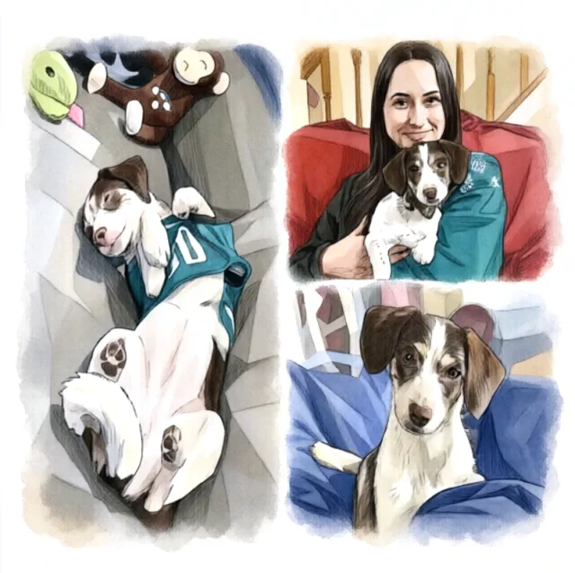

Philadelphia, PA · 10+ years in analytics
Problem Solver. Strategic Leader.
Storyteller.
Using strategy, architecture, and operating discipline to turn data into decisions made with conviction.

Trusted by organizations around the world, including
- a renowned global philanthropic foundation focused on health advocacy
- an entertainment studio whose debut made national news
- a leading cause-driven political fundraising platform
- a music-rights organization serving 1M+ creators
- a public ad-tech company
- and many others
Key impact
book of business serviced by me and my team
new, expanded, and renewed revenue I directly influenced in under two years
revenue per payroll dollar after I rebuilt how the department ran
of my direct reports promoted over three years
Range of Experience
Sectors + Industries Served
Select a sector
Industries within Tech + Media
- Music
- Entertainment Studios
- Interactive Gaming
- Publishing
- Telecoms
- Technology + IT Services
- Ad Tech
Industries within Finance + Professional Services
- Banking
- Insurance + Wealth Management
- Law
- Real Estate
Industries within Retail + Hospitality
- Retail + Home Goods
- National Food Chains
- Hospitality + Travel
- B2B eCommerce
- D2C eCommerce
Industries within Health, Education + Public Services
- Healthcare
- Life Sciences + Biotechnology
- Higher Education
- International + National Nonprofits
- Philanthropy + Foundations
- Politics + Campaigns
- Local Government
Industries within Industrials + Energy
- Manufacturing + Construction
- Energy Providers
- Utilities
Analytics
From what happened to what we do next.
A strategic foundation lays the groundwork for sustainable measurement: who is your audience, what are they looking for, how can you meet them to provide it? From there, I build the tracking, KPIs, and roadmap that move an organization up the maturity curve.
- PHASE 01UnstructuredWhat data?
- PHASE 02DescriptiveWhat happened?
- PHASE 03DiagnosticWhy?
- PHASE 04PrescriptiveWhat should we do?
- PHASE 05PredictiveWhat's next?
One Customer Journey Across a Studio's Four-Site Debut
Fully owned strategy and analytics from concept to beyond launch for new high-profile entertainment studio. One holistic journey measured across four different sites.
Turning a Member Portal into a Self-Service Engine
A KPI framework and phased roadmap for the portal 1M+ music creators use to manage royalties and register their work.
A Five-Phase Maturity Model for Web Analytics
The diagnostic I built and use to set long-term roadmaps with clients. Later the basis of a published whitepaper. Try it below.
The Cycle of Data to UX
Analyze digital data - via funnels, heatmaps, segments, and more - to find where users stall
Where Does Your Team Sit?
Try out this multiple-choice demo that samples the digital analytics maturity framework I built, to determine where your team falls.
Answers changed. Press "See My Result" to update.
Sample result
Descriptive
"What happened?"
Next three moves
AI in my workflow
AI leveraged to unlock capacity for more strategy and foresight.
AI harnessed to preserve time and minimize risk: first draft frames, data cleaning, added review, repetitive admin delegation - in a fraction of the time. Time is reallocated to strategy, proactive insights, and data confidence.
Rough Hours Saved per Site Launch w/ Custom AI Workflows
Operations + business impact
The solid practice behind team productivity.
Sustainable growth and scalability are only possible when built on an intentional foundation. I joined the org operations team and reapproached how we scoped, staffed, and billed. Here’s how the following year compared:
Shown relative to internal targets; raw values withheld. Payroll ratio is a ceiling, so moving right means coming in under it.
A Scoping System That Streamlines Budgeting
A 50+ task library with complexity multipliers that made estimates faster and more consistent, while enabling PM sufficiency. Try a demo version below.
Department Turnaround and Growth
Taking an analytics service from missing its KPIs most months to beating them, despite more conservative budgets driven by an uncertain economy and a decrease in team resources.
Templating and Standardization
Tracking documents, audit checklists, and an Analytics-Dev data layer framework built for cross-functional scalability.
Scope a Measurement Project
Try out this trimmed demo version of an estimator I built. An hour range is returned once you pick the work and project complexity.
Overall business + digital complexity
Cross-domain journeys
Ecommerce
Server-side tagging
Stakeholder + admin load
Effort range estimated
0–0 hours
Proposed scoping
Anything that doesn't fit the chosen tier moves to a phase-two addendum rather than stretching the budget.
Leadership
Empowering others through empathetic leadership.
Strong teams start with supported and empowered team members. I approach management with clear direction, thoughtful feedback, and encouraged autonomy.
Built a leveled career ladder and skill-based rubric to ensure that growth conversations had an established language.
Baseline of weekly planning meetings with wins and blockers, brief daily standups, recurring 1:1s, and public shout-outs to acknowledge exceptional work.
Merged siloed specialists for more cohesive efforts. Engineers started contributing to strategy builds and analysts started supporting tracking implementation.
Ran team trainings and university guest lectures on everything from technical analytics topics (tool use, industry updates) to strategic communication skills (spotting opportunities and handling pushback).
From my team's annual review feedback
Gaby continues to be supportive of my professional development. She takes the time to offer thoughtful, constructive feedback that not only helps me improve but also gives me confidence in the areas where I'm excelling.
Among her many strengths, her skill as a teacher and mentor has been particularly noteworthy.
Her support on client calls has also been invaluable. She strikes an effective balance of joining calls when needed while empowering me to lead, which has been a fantastic learning experience and ensures our clients receive expert guidance.
Gaby excels at providing clear feedback and information.
About
Agency-trained, operator-minded.
I grew from interning in digital marketing to leading an analytics service line from end to end: biz dev, strategy, implementation, analysis, client engagement, team management, and P&L. I’ve worked with public companies, confidential and stealth enterprises, global nonprofits, healthcare entities, and nearly everything in between.
Experience Snapshot
2015 – 2026Toolkit Highlights
- Analytics Function Design And Operating Models
- Team Leadership And Mentorship
- Hiring And Development
- Executive And Client Advisory
- Business Development And Cross-Sell
- Roadmapping And Goal Setting
- Operations Optimization
- Measurement Strategy
- Digital Analytics Maturity
- Multivariate And Personalization Testing
- Cross-Domain Tracking
- Data Audits
- Data Governance And Consent
- Dashboarding And Reporting
- Benchmarking And Goals
- Focused Actionable Analysis
- ANALYTICSGoogle Analytics (360 + GA4), Adobe Analytics, Adobe Customer Journey Analytics
- TAG MANAGEMENTGoogle Tag Manager (360), Adobe Tags
- DATA + BIBigQuery (SQL), Looker Studio, Google Marketing Platform, Tableau
- CONSENTOneTrust, Usercentrics
- TESTING + BEHAVIORAdobe Target, Hotjar, Microsoft Clarity
- WORKFLOW + AIJira, Confluence, Claude, Gemini
Off the Clock

My rescue dog and chief morale officer.

Logic puzzles, thrillers, and reading across all genres.

Die-hard Eagles fan. Go birds!

Cancer research, animal rescue, and youth enrichment.
Click a spine to pull it out. Click the cover to put it back.